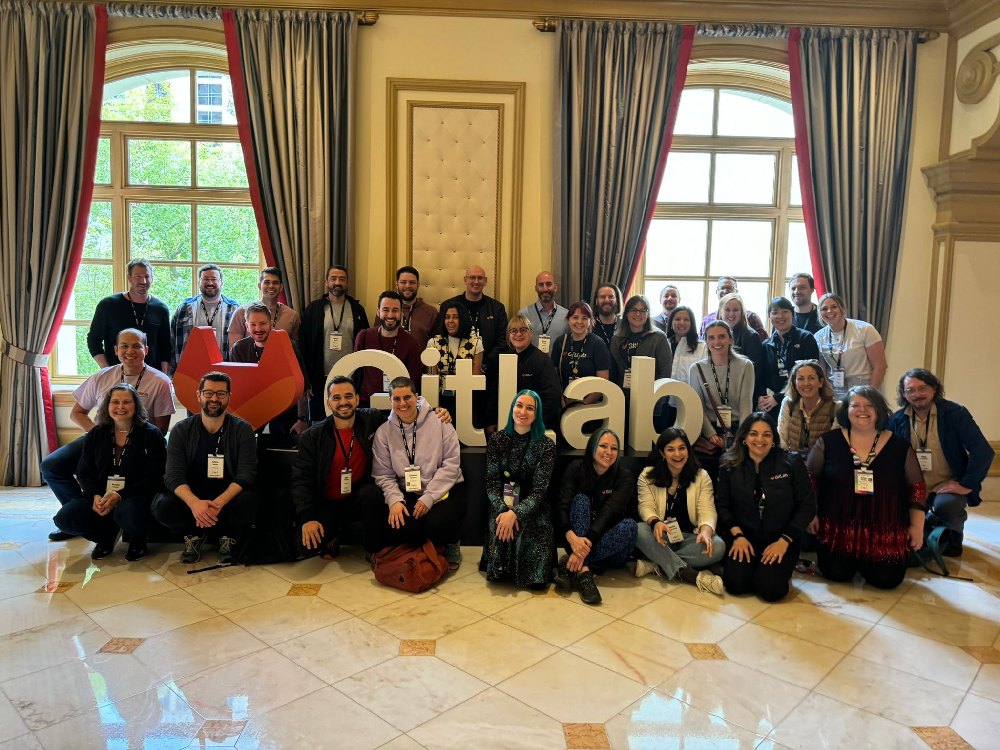
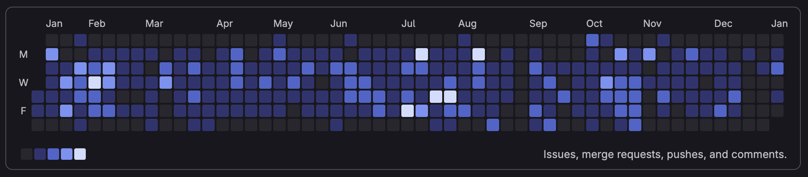

GitLab
Working at GitLab has been one of the most genuinely exciting and challenging experiences of my career. Being part of a product that is used by millions of developers around the world, and contributing to it in a way that is fully transparent and open.

It has also stretched me in ways I didn't expect. Everything at GitLab is async-first: decisions happen in issues, not meetings. Your rationale needs to stand on its own in a comment thread read days later by someone in a different timezone. That changed how I think about communication entirely.
On top of that, I joined a team with no existing design practice. There was no process for research, no framework for design critique, no established way to connect UX decisions back to product strategy. I built that from scratch, not by announcing it, but by doing it consistently until it became how the team worked. Earning the trust of a highly technical, engineering-led group through evidence rather than opinion is something I'm genuinely proud of.
Aside from the features shipped to production, including direct code contributions via merge requests, here are some of the most relevant projects I've been part of:

-
GLQL / Embedded Views Case study → Blog post → Docs → 2024-2025
- Wiki Sidebar Redesign GitLab issue → 2026
-
Wiki Contextual Comments Case study → GitLab issue → Design critique → 2025
- Build a website with GitLab Pages Blog post → March 2025
- GLQL Visual Builder Exploration Exploration 2025
- UX Forum: Rich Links Video → 2024